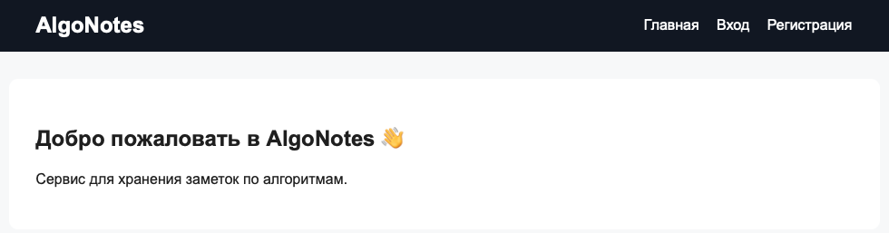
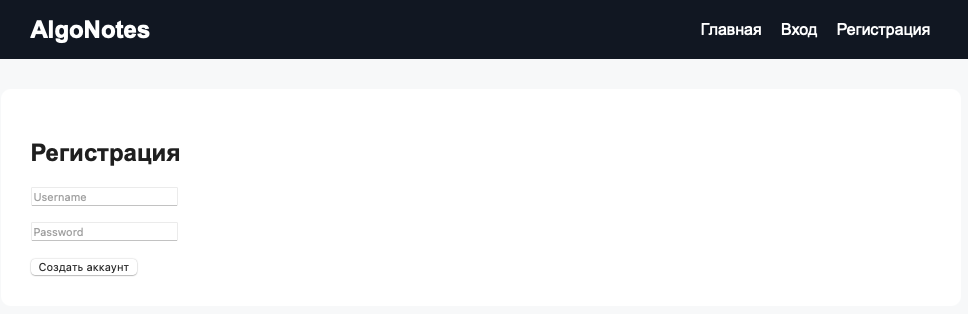
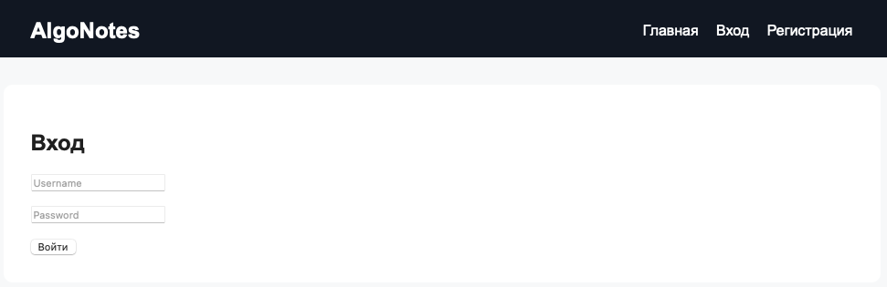
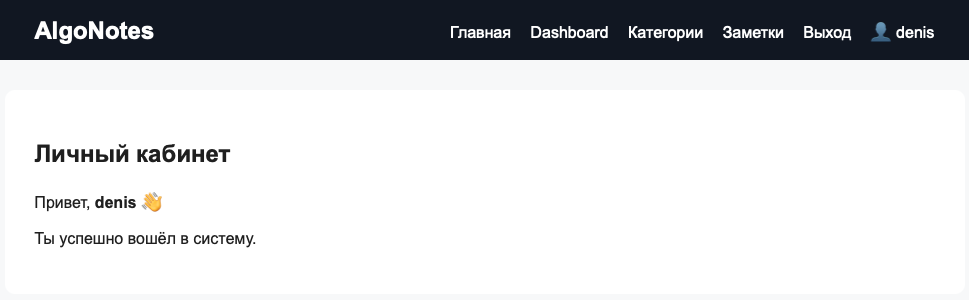
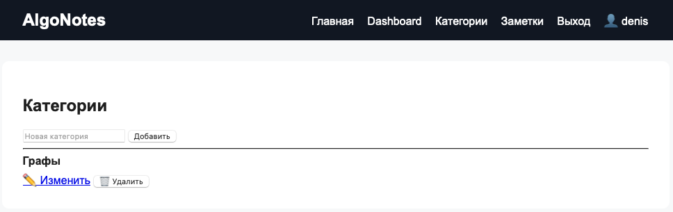
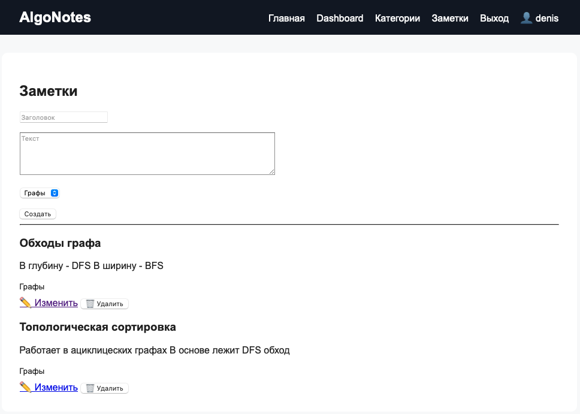
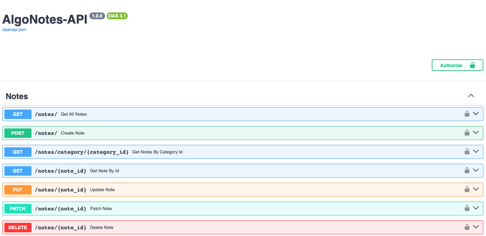
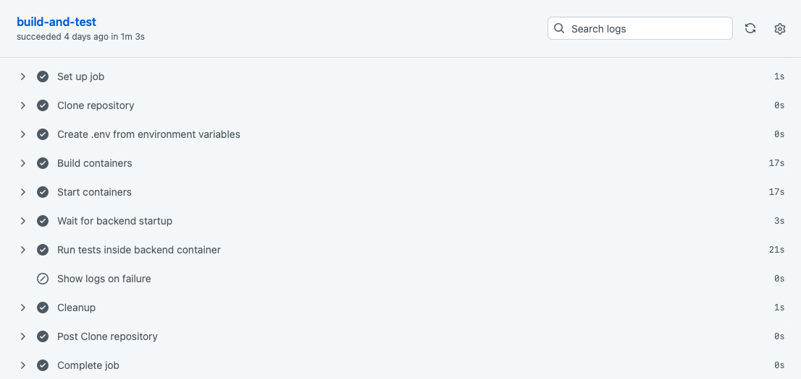

Algo Notes 📚¶
Algo Notes — сервис для хранения, структурирования и изучения заметок по алгоритмам.

📑 Содержание¶
- Возможности
- Технологический стек
- Структура проекта
- Быстрый запуск через Docker
- Переменные окружения
- Доступные страницы
- REST API
- Тестирование
- Архитектура
- CI/CD
- Полезные команды Docker
- Будущие улучшения
- GitFlow
- Лицензия
🚀 Возможности¶
- REST API для работы с заметками и категориями
- Регистрация и авторизация пользователей через JWT
- Изоляция данных по пользователям
- Web-интерфейс для работы с заметками и категориями
- Хранение данных в PostgreSQL
- Автоматическая Swagger/ReDoc-документация
- Контейнеризация через Docker Compose
- Автоматизированные тесты и CI-проверка
🛠 Технологический стек¶
Backend¶
- Python 3.12
- FastAPI 0.135.1
- uvicorn 0.41.0
- SQLAlchemy 2.0.48
- Pydantic 2.12.5
- Pydantic Settings 2.13.1
- PostgreSQL 16
- psycopg2-binary 2.9.11
Auth¶
- python-jose 3.5.0
- passlib 1.7.4
- bcrypt 4.0.1
Web¶
- Jinja2 3.1.6
- python-multipart 0.0.26
- Markdown 3.10.2
Testing / DevOps¶
- pytest 9.0.3
- HTTPX 0.28.1
- Docker
- Docker Compose
- GitHub Actions
📂 Структура проекта¶
algo-notes/
│
├── .env # локальные переменные окружения
├── .env.example # пример переменных окружения
├── .gitignore # исключения для Git
├── .dockerignore # исключения для Docker build context
├── Dockerfile # Docker-образ backend-приложения
├── docker-compose.yml # запуск backend и PostgreSQL
├── requirements.txt # Python-зависимости
├── docs/ # MkDocs-документация проекта
├── README.md # документация проекта
├── LICENSE # лицензция проекта
│
├── .github/
│ ├── CODEOWNERS # владелец кода
│ ├── ISSUE_TEMPLATE/
│ │ └── TASK.md # шаблон задачи
│ ├── PULL_REQUEST_TEMPLATE/
│ │ ├── BUGFIX.md # шаблон bugfix PR
│ │ ├── FEATURE.md # шаблон feature PR
│ │ └── RELEASE.md # шаблон release PR
│ └── workflows/
│ └── ci.yml # GitHub Actions pipeline
│
├── app/
│ ├── __init__.py # пакет приложения
│ ├── main.py # точка входа FastAPI-приложения
│ │
│ ├── auth/
│ │ ├── __init__.py # пакет auth
│ │ ├── dependencies.py # зависимости авторизации через Bearer JWT
│ │ └── security.py # хеширование паролей и генерация JWT
│ │
│ ├── core/
│ │ ├── __init__.py # пакет core
│ │ ├── database.py # SQLAlchemy engine и sessionmaker
│ │ ├── exceptions.py # пользовательские исключения
│ │ └── settings.py # настройки через pydantic-settings
│ │
│ ├── dependencies/
│ │ ├── __init__.py # пакет dependencies
│ │ └── db.py # зависимость FastAPI для получения DB session
│ │
│ ├── models/
│ │ ├── __init__.py # экспорт SQLAlchemy-моделей
│ │ ├── base.py # базовый класс моделей
│ │ ├── category.py # модель категории
│ │ ├── note.py # модель заметки
│ │ └── user.py # модель пользователя
│ │
│ ├── repositories/
│ │ ├── __init__.py # пакет repositories
│ │ ├── category_repository.py # запросы к БД для категорий
│ │ ├── note_repository.py # запросы к БД для заметок
│ │ └── user_repository.py # запросы к БД для пользователей
│ │
│ ├── routers/
│ │ ├── __init__.py # пакет API-роутеров
│ │ ├── auth_router.py # API регистрации и логина
│ │ ├── category_router.py # API категорий
│ │ └── note_router.py # API заметок
│ │
│ ├── schemas/
│ │ ├── __init__.py # пакет Pydantic-схем
│ │ ├── category.py # схемы категорий
│ │ ├── note.py # схемы заметок
│ │ └── user.py # схемы пользователей и токена
│ │
│ ├── services/
│ │ ├── __init__.py # пакет services
│ │ ├── auth_service.py # бизнес-логика регистрации и логина
│ │ ├── category_service.py # бизнес-логика категорий
│ │ └── note_service.py # бизнес-логика заметок
│ │
│ ├── static/
│ │ └── style.css # стили web-интерфейса
│ │
│ ├── templates/
│ │ ├── base.html # базовый HTML-шаблон
│ │ ├── categories.html # страница списка и создания категорий
│ │ ├── category_edit.html # страница редактирования категории
│ │ ├── dashboard.html # личный кабинет
│ │ ├── index.html # главная страница
│ │ ├── login.html # страница входа
│ │ ├── note_edit.html # страница редактирования заметки
│ │ ├── notes.html # страница списка и создания заметок
│ │ └── register.html # страница регистрации
│ │
│ ├── utils/
│ │ ├── __init__.py # пакет utils
│ │ ├── common.py # общие вспомогательные функции
│ │ └── markdown.py # рендер Markdown в HTML
│ │
│ └── web/
│ ├── __init__.py # пакет web
│ ├── dependencies.py # зависимости web-авторизации через cookie
│ ├── router.py # общий web-роутер
│ ├── templates.py # общий объект Jinja2Templates
│ └── routers/
│ ├── __init__.py # пакет web-роутеров
│ ├── auth.py # web-регистрация, вход и выход
│ ├── categories.py # web-страницы категорий
│ ├── notes.py # web-страницы заметок
│ └── pages.py # главная страница и dashboard
│
└── tests/
├── __init__.py # пакет tests
├── conftest.py # общие фикстуры pytest
│
├── auth/
│ ├── __init__.py # пакет auth-тестов
│ └── test_jwt.py # тесты JWT и паролей
│
├── repositories/
│ ├── __init__.py # пакет repository-тестов
│ ├── test_category_repository.py # тесты репозитория категорий
│ ├── test_note_repository.py # тесты репозитория заметок
│ └── test_user_repository.py # тесты репозитория пользователей
│
├── routers/
│ ├── __init__.py # пакет router-тестов
│ ├── test_auth_router.py # тесты auth API
│ ├── test_category_router.py # тесты category API
│ └── test_note_router.py # тесты note API
│
└── services/
├── __init__.py # пакет service-тестов
├── test_auth_service.py # тесты auth-сервиса
├── test_category_service.py # тесты category-сервиса
└── test_note_service.py # тесты note-сервиса
⚙️ Быстрый запуск через Docker¶
1. Клонировать репозиторий¶
git clone https://github.com/Denisonya/algo-notes.git
cd algo-notes
2. Создать .env¶
Можно взять .env.example за основу:
cp .env.example .env
Пример рабочего .env для Docker Compose:
POSTGRES_HOST=db
POSTGRES_PORT=5432
POSTGRES_DB=algo_notes
POSTGRES_USER=algo_user
POSTGRES_PASSWORD=algo_password
JWT_SECRET=algo_secret
JWT_EXPIRE_MINUTES=60
JWT_ALGORITHM=HS256
POSTGRES_HOST=db— это имя сервиса PostgreSQL внутри Docker-сети.
3. Собрать и запустить контейнеры¶
docker compose up --build
После запуска будут доступны сервисы:
backend— FastAPI-приложение на порту8000.db— PostgreSQL 16 на порту5432.
4. Открыть приложение¶
- Web-интерфейс: http://localhost:8000
- Swagger UI: http://localhost:8000/docs
- ReDoc: http://localhost:8000/redoc
🔐 Переменные окружения¶
| Переменная | Описание | Пример |
|---|---|---|
POSTGRES_HOST |
Host PostgreSQL | db |
POSTGRES_PORT |
Port PostgreSQL | 5432 |
POSTGRES_DB |
Имя базы данных | algo_notes |
POSTGRES_USER |
Пользователь БД | algo_user |
POSTGRES_PASSWORD |
Пароль БД | algo_password |
JWT_SECRET |
Секретный ключ для JWT | algo_secret |
JWT_EXPIRE_MINUTES |
Время жизни токена в минутах | 60 |
JWT_ALGORITHM |
Алгоритм подписи JWT | HS256 |
Настройки читаются в app/core/settings.py через pydantic-settings.
🌐 Доступные страницы¶
| Метод | URL | Описание |
|---|---|---|
| GET | / |
Главная страница |
| GET | /register |
Форма регистрации |
| POST | /register |
Создание пользователя через форму |
| GET | /login |
Форма входа |
| POST | /login |
Вход через форму, установка JWT cookie |
| GET | /logout |
Выход, удаление cookie |
| GET | /dashboard |
Личный кабинет |
| GET | /categories |
Список категорий пользователя |
| POST | /categories |
Создание категории через форму |
| GET | /categories/{category_id}/edit |
Форма редактирования категории |
| POST | /categories/{category_id}/edit |
Обновление категории через форму |
| POST | /categories/{category_id}/delete |
Удаление категории через форму |
| GET | /notes |
Список заметок пользователя |
| POST | /notes |
Создание заметки через форму |
| GET | /notes/{note_id}/edit |
Форма редактирования заметки |
| POST | /notes/{note_id}/edit |
Обновление заметки через форму |
| POST | /notes/{note_id}/delete |
Удаление заметки через форму |
Скриншоты интерфейса:¶
- Регистрация

- Вход

- Личный кабинет

- Категории

- Заметки

📌 REST API¶
Auth¶
| Метод | Endpoint | Описание | Авторизация |
|---|---|---|---|
| POST | /auth/register |
Регистрация пользователя | Не требуется |
| POST | /auth/login |
Получение JWT access token | Не требуется |
Categories¶
| Метод | Endpoint | Описание | Авторизация |
|---|---|---|---|
| GET | /categories/ |
Получить категории текущего пользователя | Требуется |
| GET | /categories/{category_id} |
Получить категорию по ID | Требуется |
| POST | /categories/ |
Создать категорию | Требуется |
| PUT | /categories/{category_id} |
Полностью обновить категорию | Требуется |
| PATCH | /categories/{category_id} |
Частично обновить категорию | Требуется |
| DELETE | /categories/{category_id} |
Удалить категорию | Требуется |
Notes¶
| Метод | Endpoint | Описание | Авторизация |
|---|---|---|---|
| GET | /notes/ |
Получить заметки текущего пользователя | Требуется |
| GET | /notes/{note_id} |
Получить заметку по ID | Требуется |
| GET | /notes/category/{category_id} |
Получить заметки категории | Требуется |
| POST | /notes/ |
Создать заметку | Требуется |
| PUT | /notes/{note_id} |
Полностью обновить заметку | Требуется |
| PATCH | /notes/{note_id} |
Частично обновить заметку | Требуется |
| DELETE | /notes/{note_id} |
Удалить заметку | Требуется |
Swagger UI с эндпоинтами API:¶

🧪 Тестирование¶
В проекте есть (модульные и интеграционные) тесты для всех основных слоев приложения и их главного функционала.
Запуск локально:
pytest
Запуск внутри контейнера:
docker compose exec backend pytest /app/tests
В тестах используется SQLite in-memory база данных.
🧱 Архитектура¶
Проект разделен на слои:
| Слой | Назначение |
|---|---|
routers |
REST endpoints, обработка HTTP-запросов и HTTP-ответов |
web/routers |
HTML-страницы и обработка web-форм |
services |
Бизнес-логика, проверка прав доступа, транзакции |
repositories |
Работа с БД через SQLAlchemy |
schemas |
Pydantic-схемы (валидации) входных и выходных данных |
models |
SQLAlchemy ORM-модели таблиц |
auth |
JWT, хеширование паролей, зависимости авторизации |
core |
Настройки, подключение к БД, общие исключения |
utils |
Вспомогательные функции |
Модель данных¶
Userимеет многоCategory.Userимеет многоNote.Categoryимеет многоNote.Noteпринадлежит однойCategoryи одномуUser.
При удалении пользователя или категории связанные записи удаляются каскадно на уровне ORM relationships.
🔁 CI/CD¶
В .github/workflows/ci.yml настроен workflow CI, который запускается при:
- push в
mainилиdevelop; - pull request в
mainилиdevelop.
Pipeline выполняет:
- Checkout репозитория.
- Создание
.envиз GitHub Secrets. - Сборку Docker-контейнеров.
- Запуск Docker Compose.
- Проверку доступности backend по
/docs. - Запуск тестов внутри backend-контейнера.
- Вывод логов при ошибке.
- Очистку контейнеров и volumes.
Успешный GitHub Actions workflow:¶

🐳 Полезные команды Docker¶
Запуск с пересборкой:
docker compose up --build
Запуск в фоне:
docker compose up -d
Остановка контейнеров:
docker compose down
Остановка и удаление volumes:
docker compose down -v
Просмотр логов backend:
docker compose logs -f backend
docker compose exec backend sh
🚧 Будущие улучшения¶
- Роли для пользователей веб-приложения (администраторы, модераторы, пользователи).
- Alembic-миграции вместо
Base.metadata.create_all. - Асинхронный режим работы веб-приложения.
- Расширение возможностей работы с заметками / редактирования заметок.
- Поиск по заметкам.
- Улучшение UI.
- Production deployment.
📌 GitFlow¶
main— стабильная версия.develop— активная разработка.feature/*— новые функции.fix/*— исправления.test/*— тестирование.docs/*— документация.
✨ Полезные ссылки¶
- FastAPI — https://fastapi.tiangolo.com/
- SQLAlchemy — https://docs.sqlalchemy.org/
- PostgreSQL — https://www.postgresql.org/docs/
- Docker — https://docs.docker.com/
- Pytest — https://docs.pytest.org/
📄 Лицензия¶
Проект лицензирован под MIT License.
📬 Контакты¶
- GitHub: https://github.com/Denisonya
- Repository: https://github.com/Denisonya/algo-notes
- Issues: https://github.com/Denisonya/algo-notes/issues
⭐ Если проект оказался полезным — поставьте звезду репозиторию.